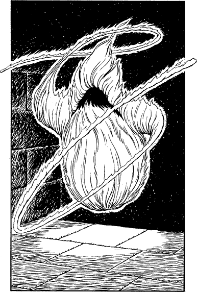

266
The tunnel floor is mostly solid stone but heavily littered with powdered rock and mouldering rubble. Slowly you advance, treading carefully among this debris to avoid making any sound that could betray your presence. The unwholesome stench becomes stronger the deeper you explore this eerie passageway, and you feel a warmth radiating from within your chest, as if your lungs had been replaced by two gently glowing coals. Your Magnakai curing skills are working to keep you safe from harm, for the air of this passageway is thick with a host of microscopic organisms, a virulent airborne cloud of disease.
At length the tunnel descends to a wide landing where a stone staircase plummets into darkness. Here, to your left and right, you see two small cave mouths criss-crossed with rusty iron bars. Only the slow drip of dank water punctuates the silence, but your super-senses detect that these cave-cells are not devoid of life. Huddled in the shadows are several blue-black shapes, hunched and entangled so as to form one unseemly mass upon the floor. Languidly an eye blinks open, then another, then three more. Slowly, limbs and torso disengage themselves from the mass and rise up unsteadily. For an instant you catch sight of the whole creature and you are shocked by its awful visage. A shaggy goat-like head is perched atop a snaky neck, and it wobbles repulsively as the beast staggers upright. Like its fellow creatures, its bloated trunk is riddled with disease and decay. As it shuffles drunkenly towards the bars, you see in its hellish eyes a baleful green glow. At first you feel a mixture of revulsion and pity for these creatures, but this feeling is suddenly replaced by cold fear when you notice that the green glow does not radiate from their eyes—it is reflected in them!
Swiftly you spin on your heels, your hand reaching instinctively to unsheathe your weapon. Confronting you now at the top of the stone stairs there hovers a monstrous shape, fashioned as if from shimmering green flame. Two whip-like tentacles extend menacingly from its core and a toothless fiery maw gapes like a death wound from where, if it were human, its face should be.

Frantically the caged beasts claw and rattle the bars of their cells as the flaming creature comes gliding towards you, borne silently on moth wings of green fire.
If you possess Kai-screen, turn to 211.
If you do not possess this Grand Mastery, turn to 152.